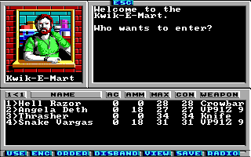

Game Tutorial Step 13: Adding a store
With action class 6 you can create special buildings like a store, a doctor, a library or the ranger center. This example just shows how to create a store but the other special buildings works similiar with the doctor, library and rangerCenter tags.
Here is the code for our store:
<actions actionClass="6">
<store id="0"
name="Kwik-E-Mart"
message="19"
itemList="2"
buyFactor="0"
sellFactor="1"
newActionClass="0xfe"
newAction="0xfe">
<itemType>2</itemType>
<itemType>0x0e</itemType>
<itemType>0x70</itemType>
</store>
</actions>
This defines a store with the name Kwik-E-Mart which sells some small weapons and ammunition from item list 2. The values of newActionClass and newAction is 0xfe here which means using the previous action class and action as a replacement for the square. The reason for this is made clear when we link this store to a square because we don't do this directly. Instead we use a transition action which references the store in it's newActionClass/newAction pair. This is a common implementation of a special building in Wasteland because this ensures that the player must confirm to enter a special building. The replacement value of 0xfe just makes sure that the square is not linked to the store permanently when the transition action we create now is executed.
Here comes the new transition action. Add it to the action container for action class 10 (0xa):
<transition id="2"
confirm="true"
relative="true"
targetMap="1"
message="18"
newActionClass="6"
newAction="0" />
Now find a good spot for your store on the map and give the square the action class a, the action 02 and the tile 0a.
Now add the new strings and you can visit the Kwik-E-Mart:
<string id="18">\rEntering the Kwik-E-Mart\r</string> <string id="19">\x07Welcome to the Kwik-E-Mart.\r\r</string>
You can download the current state of the map here: map01.xml.
